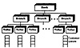

| Previous | Table of Contents | Next |
LINPACK represents mechanical engineering applications on workstations. These applications range from drafting to numerically controlled machines to finite element analysis and call for both high computation speed and good graphics processing.
Developed in 1984 by Reinhold Weicker at Siemens, this kernel contains many procedure calls and is considered to represent systems programming environments. It is available in three languages: C, Pascal, and Ada. However, the C version is the most commonly used. The results are usually presented in Dhrystone Instructions Per Second (DIPS). The benchmark documentation presents a set of ground rules for building and executing Dhrystone. The benchmark has been updated several times, and it is important to specify the version number when the kernel is used. The kernel allegedly has a rather low dynamic nesting depth of the function calls, a low number of instructions per function call, and a large percentage of time spent in character-string copying and comparing. The benchmark is a popular measure of integer performance; it does not exercise floating-point or I/O processing.
This workload consists of a set of 24 separate tests dominated by large scientific calculations that are largely vectorizable. They have been abstracted from the applications at Lawrence Livermore National Laboratories (see McMahon 1986) and run widely on systems from supercomputers to personal computers.
The results of this suite of benchmarks are rather complex to interpret because there is no attempt to reduce the results down to a single number. The results, given in MFLOPS (Millions of Floating-Point Operations Per Second), are reported for minimum, maximum, and three means: arithmetic, geometric, and harmonic.
A review of representative, large-scale computational science applications in the physics and chemistry fields reveals that 40 to 60% of the execution time, on average, is spent performing floating-point calculations both in single- and double-precision arithmetic. Large-scale computational fluid dynamics applications, such as those used in airplane design, weather modeling, and astrophysics, benefit from high, single-stream, floating-point performance, such as that provided by vector and RISC-based systems. Similarly, Monte Carlo simulations used in particle physics basic research and in computational chemistry as applied to chemical and drug design benefit from high scalar performance. The Lawrence Livermore FORTRAN kernels, which represent computational kernels extracted from actual applications developed and used in the National Laboratories, have become one de facto standard used to gauge the computational power of systems. As is common among large-scale computational science codes, a number of the kernels are highly resistant to vectorization but do benefit from high single- and double-precision floating-point performance.
This application-level benchmark has become a de facto standard to compare transaction processing systems. Although several variations of the benchmark have been in use since 1973, it was first recorded in the published literature in an anonymous article by a group of two dozen computer professionals (see Anonymous et al. 1985). The benchmark represents a distributed banking network. As shown in Figure 4.4, a bank usually has several branch offices, each with several tellers. The customers arriving at the branch stand in a queue for the next available teller. Alternately, there may be a separate queue for each teller.

FIGURE 4.4 Banking environment.
The debit-credit benchmark came into being in 1973 when a large retail bank wanted to put its 1000 branches, 10,000 tellers, and 10,000,000 accounts on-line with a peak load of 100 Transactions Per Second (TPS). Smaller systems can be represented by suitably scaling these numbers. Each TPS requires 10 branches, 100 tellers, and 100,000 accounts. For example, systems claiming a performance of 50 TPS should run the benchmark with 500 branches, 5000 tellers, and 5,000,000 accounts.
Different systems are compared on the basis of a price-performance ratio. The performance is measured by throughput in terms of TPS such that 95% of all transactions provide 1 second or less response time. The response time is measured as the time interval between the arrival of the last bit from the communications line and the sending of the first bit to the communications line. The cost includes the total expenses for a 5-year period on purchase, installation, and maintenance of the hardware and software in the machine room. It does not include expenditures for terminals, communications, application development, or operations.
| Previous | Table of Contents | Next |
){kind=link}
){kind=link}